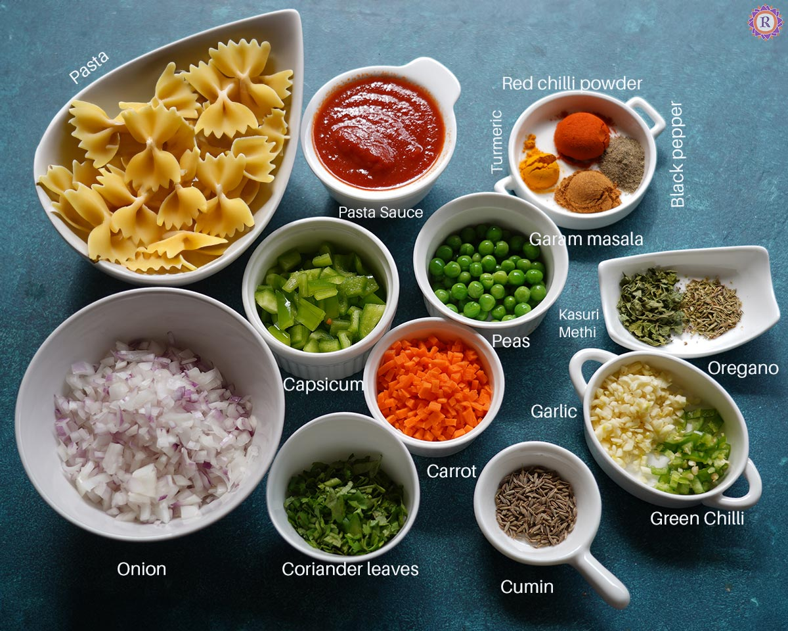

Pasta

Preparation Time: 30 mins
Difficulty: Easy
Ingredients
- 2 cups pasta (penne or fusilli)
- 2 tablespoons olive oil
- 3 cloves garlic (chopped)
- 1 cup tomato sauce
- 1/2 cup fresh cream
- 1/2 cup grated cheese
- Salt to taste
- Black pepper
- Mixed vegetables (optional)
Steps
- Boil water in a large pot, add salt, and cook pasta until soft. Drain and set aside.
- Heat olive oil in a pan and sauté garlic until fragrant.
- Add vegetables (if using) and cook for 3–4 minutes.
- Pour in the tomato sauce and let it simmer for a few minutes.
- Add fresh cream and mix well to make it creamy.
- Add cooked pasta to the sauce and mix gently.
- Season with salt and black pepper.
- Sprinkle grated cheese on top and cook for 1–2 minutes.
- Serve hot and enjoy your delicious creamy pasta!